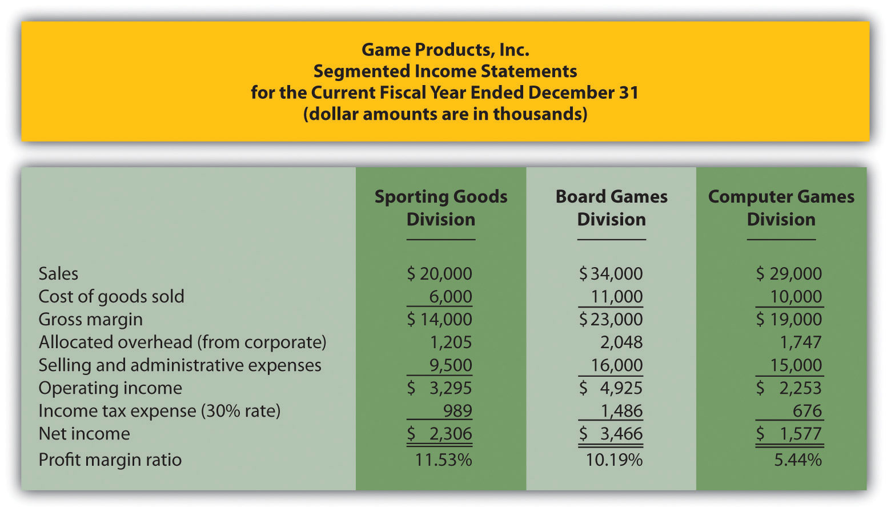

Question: Now that we know an investment center is an organizational segment responsible for costs, revenues, and investments in assets, where do we start in trying to evaluate the performance of investment centers?
Answer: The starting point for evaluating investment centers is typically with reviewing segmented income for each investment center (or division). Segmented incomeSegment (or division) revenues minus segment expenses. is segment revenues minus segment expenses. Top management is interested in the level of profit that each division generates, and segmented income gives them this information.
Question: In the dialogue at the beginning of the chapter, Mandy Dwyer, president and CEO, said she would like to increase the annual bonus for Carla Klesko, manager of the Board Games division, based on the division’s level of profit relative to the other divisions. How does the Board Games division profits compare with the other divisions?
Answer: Profit for the Board Games division is higher than either of the other two, as shown in Figure 11.3 "Segmented Income Statements (Game Products, Inc.)".
Figure 11.3 Segmented Income Statements (Game Products, Inc.)
Although this income statement looks much like a financial accounting income statement prepared for outside users, it is for internal use and therefore, need not comply with U.S. Generally Accepted Accounting Principles (U.S. GAAP). In fact, organizations can define income or profit many different ways when evaluating performance. For example, some might only look at operating income, others might exclude allocated overhead from operating income. Another alternative is to focus on gross margin. The point is that managerial accountants must be flexible in designing reports that best meet the needs of managers.
The president of Game Products, Inc., referred to net income when she indicated that the Board Games division performed very well for the year. Solely based on this measure, Mandy’s statement is accurate as the Board Games division has net income of $3,466,000 versus $2,306,000 for the Sporting Goods division and $1,577,000 for the Computer Games division.
Question: Although using net income for each division as a performance measure is relatively simple, there are two significant weaknesses. What are these weaknesses?
Answer: First, not all divisions are of equal size. Naturally, larger divisions should produce larger profits. It is unfair to compare net income for a smaller division with net income for a larger division for the purpose of evaluating division manager performance. With $34,000,000 in sales, the Board Games division should be expected to have higher net income than the other divisions, each of which has sales of less than $30,000,000.
One solution is to compare profit margin ratios for each division (net income ÷ sales). As shown at the bottom of Figure 11.3 "Segmented Income Statements (Game Products, Inc.)", the Sporting Goods division has the highest profit margin ratio at 11.53 percent, compared to 10.19 percent for Board Games, and 5.44 percent for Computer Games. (Chapter 13 "How Do Managers Use Financial and Nonfinancial Performance Measures?" presents several additional financial ratios used to evaluate performance.)
Because each division manager has control over revenues, costs, and investments in assets, each division is considered an investment center. Thus a second weakness in using segmented net income information to evaluate division manager performance is that net income as the sole measure of performance ignores the assets used to produce net income.
For example, suppose the Sporting Goods division only invested approximately $29,000,000 in assets to produce $2,306,000 in income, while the Board Games division invested $55,000,000 in assets to produce $3,466,000 in income. Which division had the best performance? We need a measure to evaluate how well each division performed relative to the investments made. We discuss three such measures next.
Kitchen Appliances has two divisions—a Southern division and a Northern division. The following segmented financial information is for the most recent fiscal year ended December 31 (dollar amounts are in thousands).
| Southern Division | Northern Division | |
| Sales | $5,000 | $30,000 |
| Cost of goods sold | 1,500 | 13,000 |
| Allocated overhead | 286 | 1,714 |
| Selling and administrative expenses | 2,100 | 12,000 |
Assume the tax rate is 30 percent.
Solution to Review Problem 11.3
The segmented income statements are shown as follows.
The Northern division is most profitable with net income of $2,300,000 versus net income of $780,000 in the Southern division. Using net income to evaluate which division is most profitable can be misleading because it does not consider the amount of assets needed to produce income. For example, the Northern division may have invested considerably less in assets to produce net income of $780,000.
Another reason this may be misleading is no consideration is given to the dollar amount of sales required to produce the net income for each division. Clearly the Northern division has significantly higher sales ($30,000,000 versus $5,000,000 for the Southern division) and therefore should have significantly higher net income.
The profit margin ratio for the Southern division is 15.60 percent (= $780,000 net income ÷ $5,000,000 sales), and the profit margin ratio for the Northern division is 7.67 percent (= $2,300,000 net income ÷ $30,000,000). This shows that each dollar in sales at the Southern division generates more net income (15.60 cents) than at the Northern division (7.67 cents).
Organizations prefer to use the profit margin ratio when comparing segments because it serves as an equalizer in comparing divisions with significantly different levels of sales revenue.